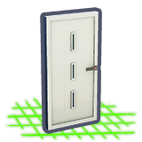
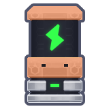
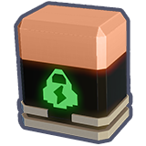

How damage affects items
Cubic Odyssey tracks durability on 388 of the 622 catalogued items. Every weapon, tool, suit, backpack, and gear-slot item has a finite use-bar that drains with use and damage and must be refilled at a repair station — or the item is eventually destroyed.
How durability works
- Each item ships with a
durabilityinteger in its.cfg(visible on every item's detail page in the infobox when present). - The most common starting durability is 100; consumable-power items (batteries) have 300; a few specialty items differ.
- Use, weapon impacts, and environment hazards each take durability off the bar. The exact decay rate per shot/swing isn't exposed in the configs — it's tuned per item type by the engine.
- Items don't vanish at 0 durability. They become broken: weapons stop firing, tools stop working, gear stops applying its
m_attributesbonuses, and the item is held in your inventory as a 0-durability stub until you repair or scrap it.
Durability distribution (from the data)
| Durability value | Items | Likely group |
|---|---|---|
| 100 | 272 | Weapons, suits, backpacks, most gear |
| 0 | 102 | Low-tier / consumable-like gear |
| 300 | 2 | Batteries / power packs |
| 600 | 2 | High-tier or specialty gear |
| 1200 | 2 | High-tier or specialty gear |
| 2400 | 2 | High-tier or specialty gear |
| 2700 | 2 | High-tier or specialty gear |
| 4800 | 2 | High-tier or specialty gear |
Which categories carry durability
| Item type | Count |
|---|---|
| WEAPON_RANGED | 203 |
| MOD | 65 |
| GEAR | 49 |
| WEAPON_MELEE | 27 |
| DRONE_GEAR | 21 |
| UTILS | 16 |
| SHIP_COMPONENT_BATTERY | 7 |
Repair stations
The data has exactly two player-deployable repair stations:
| Station | Identifier | Pays with | |
|---|---|---|---|
 |
Repairing Bench | dpl.repair_bench.1 | Materials. The recipe is unlocked at Crafting 1 and the bench itself is cheap to craft — see the inputs below. |
| Repairing Bench Qubits | dpl.repair_bench.qubits | Qubits. Faster, no scavenging required, but the cost scales with the item's value — high-tier weapons / suits get expensive quickly. |
Crafting the materials repair bench
| Input | Qty |
|---|---|
| Wiring | 2 |
| Connector | 4 |
| Circuit Board | 2 |
| Silicon Ingot | 16 |
Both benches restore durability to the item's durability max value — the cap doesn't decay as you repair. Some other games degrade the cap; Cubic Odyssey (per the configs) does not.
Recycle vs repair
Every item with durability also exposes a recycle_value field. If you scrap an item at a recycle station, that's the qubits / materials you recover — usually far less than the item's base_price when intact. So:
- Above ~30% durability: always repair. Materials cost ≪ replacement cost.
- Outdated tier: recycle the old version when you craft an upgrade. Don't repair a Mining Laser 2 you'll never use again.
- Mid-fight near a station: the qubits bench is the safer choice — repairs in seconds vs the materials bench which needs you to actually have wiring / connectors / silicon ingots on hand.
Highest- and lowest-durability items in the data
| Item | Tier | Durability | Recycle | |
|---|---|---|---|---|
| Battery 7 | T7 | 4800 | 8 | |
| Battery 7 | T7 | 4800 | 16 | |
 |
Battery 6 | T6 | 3300 | 6 |
| Battery 6 | T6 | 3200 | 12 | |
| Battery 5 | T5 | 2700 | 5 | |
 |
Battery 5 | T5 | 2700 | 10 |
| — and lowest-durability — | ||||
| Big Spider Sword | T1 | 0 | None | |
| Creature Corruption Bite | T1 | 0 | None | |
| Critter Bite Physical 1 | T1 | 0 | None | |
| Critter Bite Physical 2 | T1 | 0 | None | |
| Critter Bite Physical 3 | T1 | 0 | None | |
| Critter Bite Physical 4 | T1 | 0 | None | |
Tips
- Always craft a Repairing Bench as soon as Crafting 1 is hit. It costs trivial materials and saves you from a long walk back to an outpost to repair.
- Carry one Qubits bench at a forward base. Materials bench at home; Qubits bench in the field — pay with qubits when you can't be bothered hauling reagents.
- Don't push to 0 durability in dangerous zones. A 0-durability mining laser still drops when you die, but it has zero value to recover.
- Battery items (300 durability) are stamina power packs, not weapons. They consume their bar by being used to recharge stamina, not by taking hits.